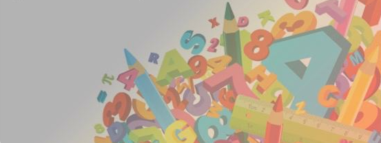

<ion-header>
    <ion-navbar core-back-button>
        <ion-title>
            <core-format-text [text]="siteName" contextLevel="system" [contextInstanceId]="0"></core-format-text>
            
        </ion-title>

        <ion-buttons end>
            <button *ngIf="searchEnabled" ion-button icon-only (click)="openSearch()" [attr.aria-label]="'core.courses.searchcourses' | translate">
                <ion-icon name="search"></ion-icon>
            </button>
            <core-context-menu>
                <core-context-menu-item *ngIf="(downloadCourseEnabled || downloadCoursesEnabled)" [priority]="500" [content]="'addon.storagemanager.managestorage' | translate" (action)="manageCoursesStorage()" iconAction="cube"></core-context-menu-item>

                <!-- Action for dashboard and site home. -->
                <core-context-menu-item *ngIf="(siteHomeEnabled || dashboardEnabled) && (downloadCourseEnabled || downloadCoursesEnabled)" [priority]="1000" [content]="'core.settings.showdownloadoptions' | translate" (action)="toggleDownload()" [iconAction]="downloadEnabledIcon"></core-context-menu-item>

                <!-- Actions when both site home and dashboard are disabled. -->
                <core-context-menu-item *ngIf="!siteHomeEnabled && !dashboardEnabled && mcComponent && mcComponent.downloadAllCoursesEnabled && mcComponent.courses && mcComponent.courses.length >= 2" [priority]="800" [content]="'core.courses.downloadcourses' | translate" (action)="mcComponent.prefetchCourses()" [iconAction]="mcComponent.prefetchCoursesData.icon" [closeOnClick]="false" [badge]="mcComponent.prefetchCoursesData.badge"></core-context-menu-item>
                <core-context-menu-item *ngIf="!siteHomeEnabled && !dashboardEnabled && mcComponent && mcComponent.courses && mcComponent.courses.length > 5" [priority]="700" [content]="'core.courses.filtermycourses' | translate" (action)="mcComponent.switchFilter()" [iconAction]="'funnel'"></core-context-menu-item>
            </core-context-menu>
        </ion-buttons>
    </ion-navbar>
</ion-header>
<ion-content>
    <core-tabs [selectedIndex]="firstSelectedTab" [hideUntil]="tabsReady">
        <!-- Site home tab. -->
        <core-tab [show]="siteHomeEnabled" [title]="'core.sitehome.sitehome' | translate">
            <ng-template>
                <ion-content>
                    <ion-refresher [enabled]="!!siteHomeComponent && siteHomeComponent.dataLoaded" (ionRefresh)="siteHomeComponent.doRefresh($event)">
                        <ion-refresher-content pullingText="{{ 'core.pulltorefresh' | translate }}"></ion-refresher-content>
                    </ion-refresher>
                    <core-sitehome-index [downloadEnabled]="downloadEnabled"></core-sitehome-index>
                </ion-content>
            </ng-template>
        </core-tab>

        <!-- Dashboard tab. -->
        <core-tab [show]="dashboardEnabled" [title]="'core.courses.mymoodle' | translate">
            <ng-template>
                <ion-content>
                    <ion-refresher [enabled]="dashboardLoaded" (ionRefresh)="refreshDashboard($event)">
                        <ion-refresher-content pullingText="{{ 'core.pulltorefresh' | translate }}"></ion-refresher-content>
                    </ion-refresher>
                    <core-loading [hideUntil]="dashboardLoaded" class="core-loading-center">
                        <ion-list>
                            
                            <!-- Dashboard blocks. -->
                            <ng-container *ngFor="let block of blocks">
                                <core-block *ngIf="block.visible" [block]="block" contextLevel="user" [instanceId]="userId" [extraData]="{'downloadEnabled': downloadEnabled}"></core-block>
                            </ng-container>
                        </ion-list>

                        <core-empty-box *ngIf="blocks.length == 0" icon="qr-scanner" [message]="'core.course.nocontentavailable' | translate"></core-empty-box>
                    </core-loading>
                </ion-content>
            </ng-template>
        </core-tab>

        <!-- Tab to display if both site home and dashboard are disabled. -->
        <core-tab [show]="!siteHomeEnabled && !dashboardEnabled" [title]="'core.courses.mymoodle' | translate">
            <ng-template>
                <ion-content>
                    <ion-refresher [enabled]="mcComponent && mcComponent.coursesLoaded" (ionRefresh)="refreshMyCourses($event)">
                        <ion-refresher-content pullingText="{{ 'core.pulltorefresh' | translate }}"></ion-refresher-content>
                    </ion-refresher> 
                    <ion-grid no-padding class="safe-area-page">
                        <ion-row no-padding>
                            <ion-col *ngFor="let usercategory of userCategory" no-padding col-12 col-sm-6 col-md-6 col-lg-4 col-xl-4 align-self-stretch >
                                <ion-card>
                                    
                                    <ion-item tappable text-wrap detail-none (click)="openCourse(usercategory.catid,usercategory.name)" class="core-course-link">
                                        <h2>
                                            <core-format-text [text]="usercategory.name" contextLevel="usercategory" [contextInstanceId]="usercategory.catid"></core-format-text>
                                        </h2>
                                        <button ion-button clear item-end>
                                            <ion-icon name="arrow-forward"></ion-icon>
                                        </button>
                                    </ion-item>
                                </ion-card>
                            </ion-col>
                        </ion-row>
                    </ion-grid>
                    <!-- <core-courses-my-courses></core-courses-my-courses>  -->
                </ion-content>
            </ng-template>
        </core-tab>
    </core-tabs>
</ion-content>